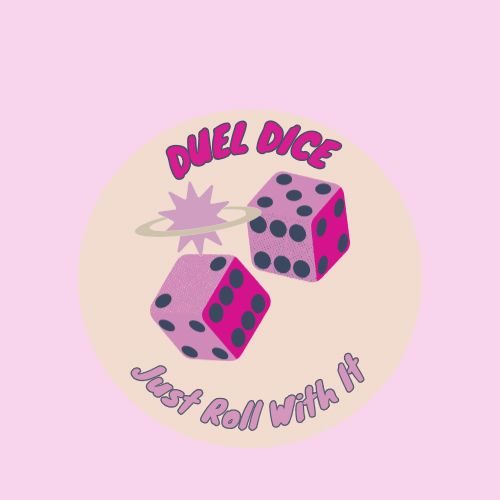

Nompumelelo Sibande
IAM Intern | Information Systems Graduate | Aspiring Cybersecurity & Cloud Analyst

IAM Intern | Information Systems Graduate | Aspiring Cybersecurity & Cloud Analyst
I am an Information Systems graduate with a strong foundation in both business and technology, developed through academic studies and practical industry experience.
During my studies, I completed modules such as Enterprise Information Systems, Database Systems, Systems Development, Project Management, Business Analysis, and Emerging Technologies. These subjects helped me develop strong analytical thinking, problem-solving skills, and an understanding of how technology supports and improves business processes. I also gained hands-on experience building systems such as a mall ticketing system, a food aid application, and a mobile application using C#, .NET, SQL, and Xamarin.
After completing my studies, I joined Nedbank through the YES Programme, where I currently work in the Identity and Access Management (IAM) team. In this role, I serve as the first point of contact for internal users, providing IT support for access, authentication, and system-related issues. My responsibilities include Active Directory and Microsoft Entra user management, handling password resets, account lockouts, MFA troubleshooting, onboarding and offboarding of users, and logging incidents using ServiceNow.
Working in a banking environment has strengthened my understanding of enterprise security, compliance, and the importance of protecting user identities. I have gained exposure to real-world identity governance processes and developed a strong awareness of how critical secure access management is in large organisations.
I am currently building my skills in networking (CompTIA Network+) and expanding my knowledge in cybersecurity and cloud computing, with a focus on Microsoft Azure. My long-term goal is to grow into a cybersecurity or cloud security role where I can work on securing systems, managing infrastructure, and contributing to safe and efficient digital environments.

Real-world IAM experience in a banking environment managing user access, authentication, and system security.
What I did:
Active Directory user management, Microsoft Entra support, MFA troubleshooting, onboarding/offboarding, ServiceNow ticket handling.
Tools:
Active Directory, Microsoft Entra, ServiceNow, MFA systems

A system connecting food donors with recipients to reduce food waste and improve distribution.
What I did:
System design, database creation, workflows, and user role modelling.
Tools:
SQL, C#, .NET, Draw.io

Database system for managing bookings, tickets, and customer data in a mall environment.
What I did:
Database design, ticket booking logic, and system documentation.
Tools:
SQL Server, Visual Studio

Mobile dice game with multiple difficulty levels and interactive gameplay.
What I did:
UI design, game logic, navigation, and event handling.
Tools:
C#, Xamarin.Forms, .NET
Email: nfsibande@gmail.com
LinkedIn: www.linkedin.com/in/nompumelelo-sibande-107358258